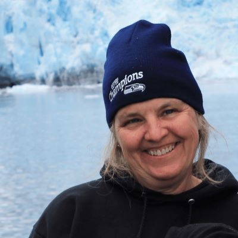
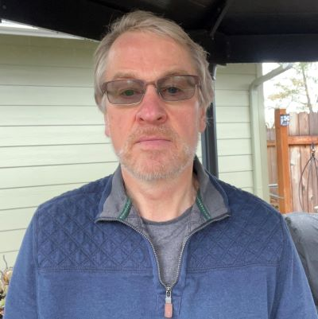

Brenda J. Buck
Program Director
Gretchen Andrew
Program Manager, FIA
Sami Ahmed
Software Engineer
Alana Bayless
Junior Project Manager
Helen Beresford
Database Programmer
John Bertini
Senior Software Engineer
Dave Castillo
Software Engineer
Brian Cordova
Senior CSA

Vicki Foster
Data Specialist
Westly Hart
DB Architect / SYS Admin
Sunil Manzoor
Software Engineer

Cedric Men
Student Programmer
Kelvyn Meyers
Senior Software Engineer
Luiza Novytska
Student Accessibility Tester
Jane Reid
Data Specialist

Chris Rosado
Student Programmer
Larry Royer
Information Specialist

Maria Surova
Student Programmer

Ron Wanek
Data Specialist